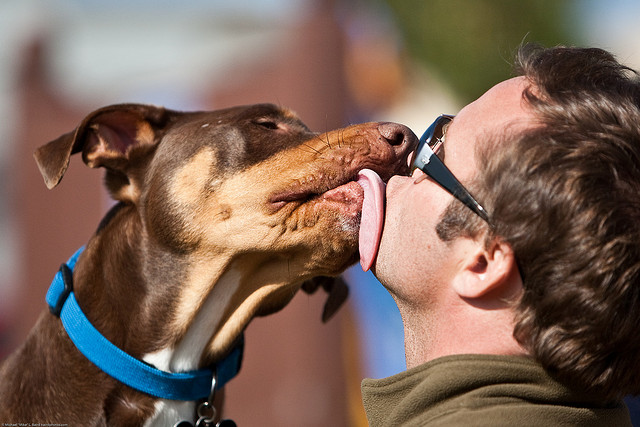
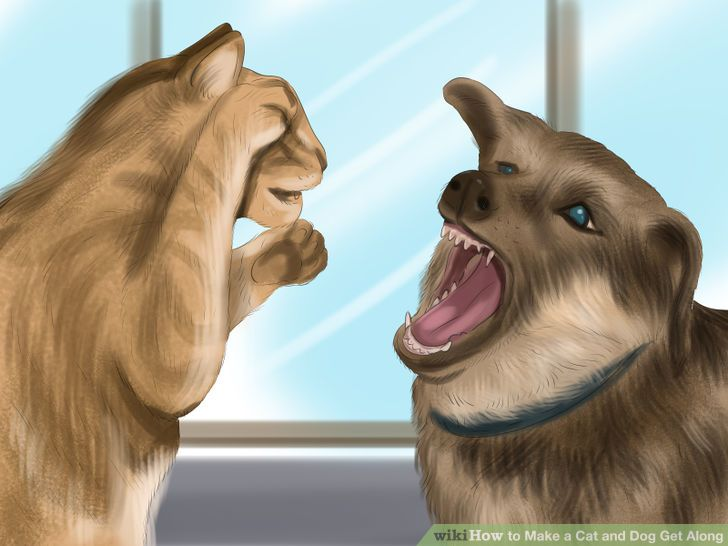
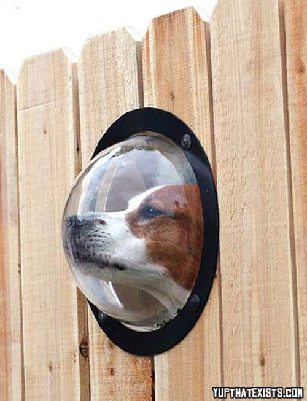
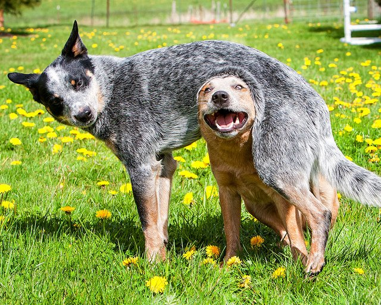

Chapter 1
Once upon a time there was a sad and lonely dog named Pete.
Pete was really a pretty cool dog. If you walked into Pete's house he would jump up and try to lick you to death. Good if you were having a bad day, or if you wanted to rid your face of any extra crumbs.
There was a reason, however, that Pete got so excited to see visitors.
PETE WAS LONELY.
I mean, who could blame him? His owners loved him to pieces, but that dog needed ANOTHER DOG. A playmate. A packmate. A soulmate!
So, what to do? What would you do if you were Pete? He couldn't talk to his family. He didn't know English.
He couldn't talk to the cat. He didn't want his nose to get scratched.
Chapter 2
BUT! There was someone who would understand him....
LEO. The dog next door.
LEO spoke Doglish. LEO would not scratch his nose. LEO would lick and jump and play and run....with only one problem.
LEO was on the other side of a fence. A big, tall, sturdy fence. Peter could hear Leo, he could smell him, he could even see him through the boards. But Pete
never yet tried to get to Leo. Chapter 3
Let's help Pete, what do you say?
Let's bring Pete outside! Let's open the gate! Let's bring Pete inside....Leo-Land!
LOOK AT THEM GO! JUMP PLAY FETCH CHASE ROLL BARK GO NUTS!!!!!
Thank you, you nice person! You just made Pete's life worth living. and you didn't exactly hurt Leo's life either!